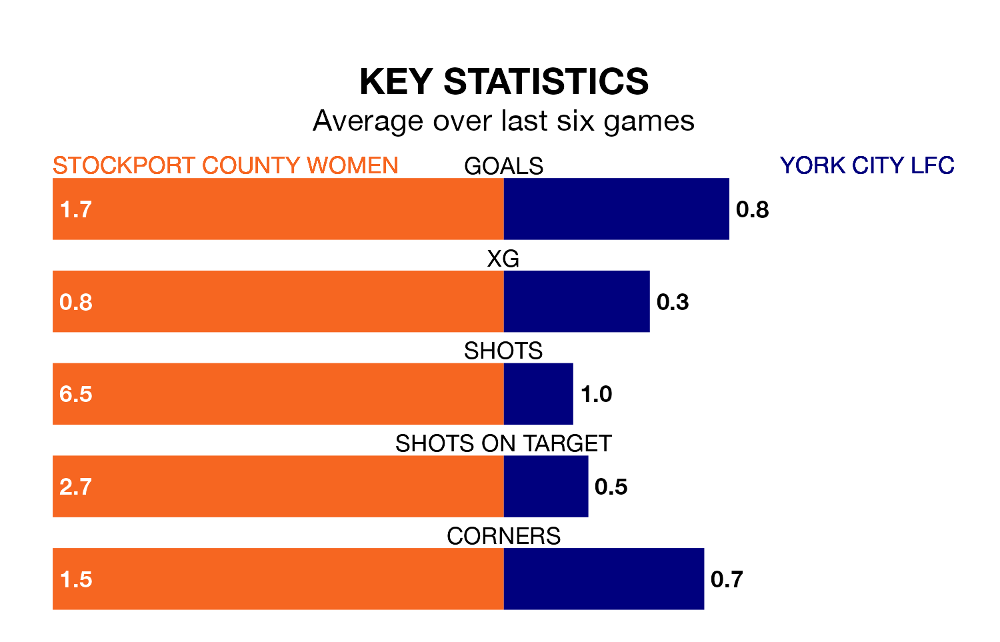

Stockport County Women face York City LFC on Sunday seeking to protect their formidable unbeaten run in the Women's National League Division One North.
Stockport County are unbeaten in nine, with four wins and five draws, ahead of the 2pm kick-off.
They face a York City team who have drawn four and lost five over the same number of games.
York City are 10th in the table after 17 games, of which they have won two and drawn five, earning 11 points.
Stockport County are five places ahead of the away team in fifth, with eight wins and eight draws putting them on 32 points.
With 22 goals in 17 games so far this season, York City are scoring at below the league average rate with 1.3 goals per game. And they are conceding at an average rate, letting in 27 goals at a rate of 1.6 per game.
The hosts are also below average scorers, with 1.4 goals per game, compared to a league average of 1.6. They have conceded 0.9 goals per game.
In the last three years, Stockport County and York City have played each other on three occasions. Stockport County won all of them.
Their last meeting was on January 28, when Stockport County won 1-0 away.
Stockport County's last match was on April 21, a 3-3 draw against Leeds Women.
York City drew 1-1 with Hull City LFC last time out, also on April 21.
Updated: 07:59 (UTC), 26/04/24